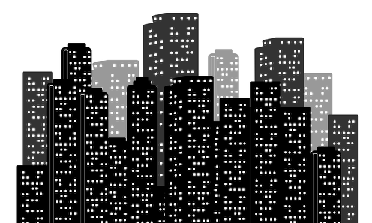
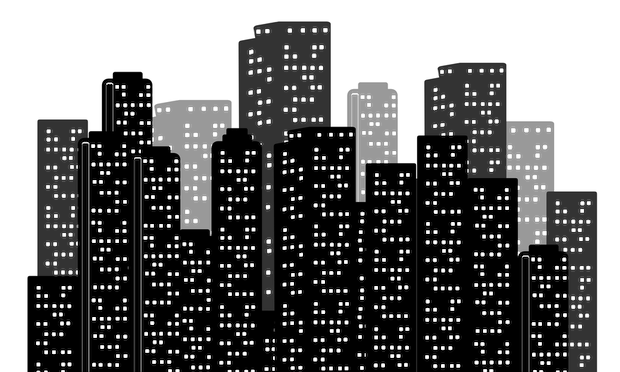

Hi, I'm Sergio
Talent Acquisition Specialist


Graduated Psychologist from the Universidad Pontificia Bolivariana (Medellin, Colombia). Currently living in Tallinn, Estonia; where I find talent at Glia, the StartUp that is changing how companies engage with customers. Occasional photographer, foodie and code enthusiast.
As a psycholoigist I believe mental health is not just something that belongs in the consultory. So, I recruit, develop and form talent stricly sticking to cognitive theory, without losing flexibility in the practice
I started shooting in 2009 to win a high school contest...which I finally did in 2012. Since then I've participated in festivals, got certified as oficial photographer in several national events and founded a photography group. My greatest achievement: using an analog camera without the exposimeter and not losing any picture in the roll.
The best way to discover a new place is through it's food, as Anthony Bourdain said: "Food is everything we are. It's an extension of nationalist feeling, ethnic feeling, your personal history, your province, your region, your tribe, your grandma. It's inseparable from those from the get-go.""
Do you have an interesting proposal? are you looking for a fellow foodie? Seeking advice about HR? Let's talk over some good meal!